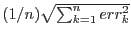
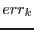

XMM-Newton Science Analysis System
omsrclistcomb (omsrclistcomb-2.22.2) [xmmsas_20170112_1337-16.0.0]
This column contains the standard error of the merged source position- ie
 , where
 are the
position errors of the n individual sources. Note that input errors from the individual source-list files
are first converted from pixels to arcsecs.
XMM-Newton SOC/SSC -- 2017-01-12